Walkachusetts I ruptured my achilles in January, and after a sedentary winter, decided to walk across Massachusetts as I relearned to walk. read more
I ruptured my achilles in January.
Couch-bound for most of the winter, I read over a dozen books about walking journeys. I was inspired. Obsessed?
I decided to walk across Massachusetts.
It was an idea born out of compromise. I’m not adventurous enough to hike the Appalachian Trail, but I still wanted adventure.
Most people would consider my home state of Massachusetts small. It takes just over two hours to drive across its midsection on the Mass Pike, a route I often take between visiting family in Cambridge and my home in Great Barrington. But a two-hour car trip could be a weeklong adventure on foot. That seemed big enough, and feasible.
I talked about the walk a lot, with many different people. The more I talked, the more real it became.
Why? They asked.
Just for the heck of it, I said.
In reality, there were many reasons: I wanted to push myself as I relearned to walk. I wanted to spend time away from my computer. I wanted to fill the competitive void that emerged after basketball claimed my achilles. I wanted to see if I had even a fraction of the adventurous spirit my literary idols demonstrated.
Sure, their journeys were arduous, but they seemed so idyllic. I wanted to live what I read.
With the support of my family and team at The Pudding, I walked planned, and planned, and planned some more. (Remember, not adventurous).
I started with the most tangible and fun distraction—packing my bag (with a slight obsession with making it ultralight), well before I even finished choosing my route.
Finding the balance between a safe, appealing, and convenient route presented a challenge. Unlike well-trodden paths like the Camino de Santiago or the Appalachian Trail, very few people have (publicly) walked across Massachusetts.
Camping spots were neither pervasive nor convenient, and wild camping was a bit out of my comfort zone, so I mapped out the towns with hotels, Airbnbs, or old friends.
From the comfort of my couch, I performed the modern ritual of surveying thousands of satellite images taken from miles above, all to decide where to walk.
I spent hours fine-tuning and adjusting my route. Zoom, pan, click, repeat. My journey—code named Walkachusetts—was ready.
According to my plan, it would take me nine days to walk 160 miles across Massachusetts. I would pass through 30 towns and take an estimated 368,000 steps.
368,000 steps!
That’s a lot of steps. A number that lived rent-free in my head for most of the walk.
Here are my logs and observations.
Day Zero
In which I left my home and set out for Cambridge.
The hardest part of the walk might have been getting in the car and saying goodbye to my daughter. She did her best to prevent me from leaving, and I let myself linger. We don’t spend a lot of time apart, so that was tough.
The reality of what I was doing didn’t hit me until I drove through my namesake town of Russell. I’d be staying there on my seventh night, if my body allowed it. I’d gotten to the point where I could walk an 18-mile day, followed by days of rest. The thought of doing that nine consecutive days sounded absurd.
After an unremarkable ride, I arrived in Cambridge. It was surreal to spend two hours doing something that would take me over a week to complete.
I went to sleep anxious, underscored by a self-imposed pressure to not waste this rare opportunity. I felt the need to make something significant of the week away from family, work, and obligation.
0 steps (4 gallons of gas used).
368,000 left.
Day One
In which I passed through the towns of Cambridge, Belmont, Waltham, Wayland, Weston, and Sudbury.
Day One 18 miles through six towns. One rule: no music or podcasts. Mostly anticlimactic. I ended the day sore, with a pinky toe blister, and a belly full of lasagna. read more
My mom joined me for the first few miles. We chatted about how different these familiar places felt on foot. It was a nice send-off, but it felt like my walk truly began when we parted ways in Waltham.
I had one simple rule: no music or podcasts. I wanted to immerse myself in my surroundings and the walk itself—to be one with the sounds, the sights, and my thoughts. The prospect was simultaneously daunting and exciting. What would I learn about myself?
It felt good to walk past people sitting in traffic. But…it mostly felt anticlimactic. It was just a regular day and people were going about their regular lives.
After tripping on a raised piece of concrete, I introduced my second rule: no looking at the phone while walking.
I had an unreasonably large dose of lasagna for lunch, then crossed a highway, as sidewalks gave way to my first paved rail trail.
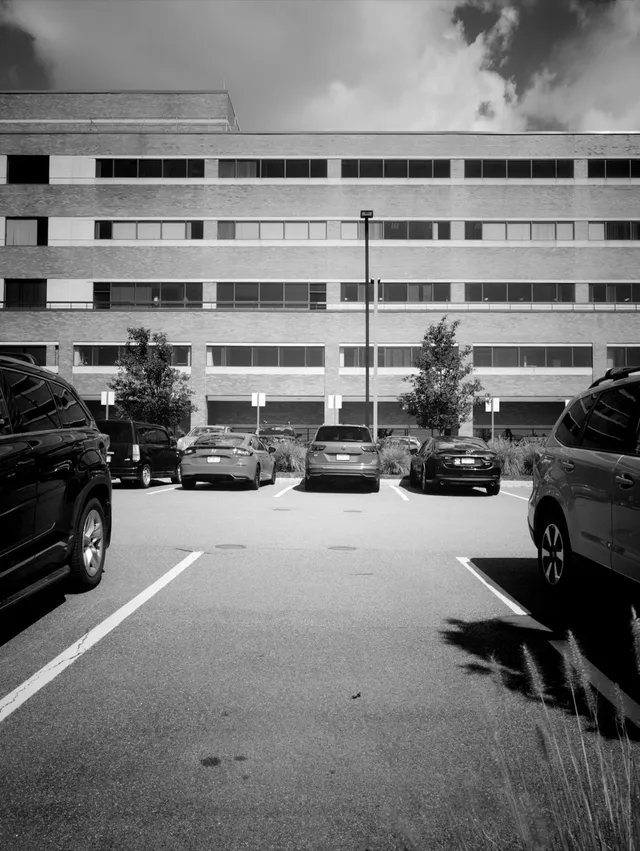

The first segment of the trail followed the power lines, which provided unrelenting sun and a soundtrack of crickets and birds. Midday on a Friday was pretty quiet except for the occasional cyclist or jogger.
After a quick water and snack refill in Wayland, I experienced my first (user) navigational error—a trail labeled as “in design” was completely non-existent and impassible, so for the first time I stepped on the road, against traffic. The tiny-shouldered, fast-moving traffic of route 20 was not how I envisioned things starting, and put a pep in my step. I wasn’t yet acclimated to cars and tracks rushing by so closely. I leapt into the first strip of high grass and litter I saw, comforted by my decision to wear pants.
A mile ahead I returned to the safety of the rail trail, just as my body started to signal that it was ready to wrap things up for the day. The last few miles were so straight and repetitive that they crawled by.
I stopped for the day after 18 miles. Despite a mild concern about how sore I was, I felt proud that I finished day one&,mdash;though with a faint displeasure about how unspectacular it all felt.
My achilles felt good, just a little sore and stiff. The real concern was that in spite of my finger toe-sock-and-wool-sock technique, I discovered a blister developing on the bottom of my right pinky toe…
I stayed at a friend’s house and dined on more Italian-based carbs, beat a child and a grandma at ping pong, and slept like a rock.
42,090 steps.
325,910 left.
Day Two
In which I passed through the towns of Hudson, Bolton, Berlin, and Clinton.
Day Two Another 18 miles. Jarring transitions from rail trail to roads to woods. I heard a Green Day cover band through the woods near a corn maze, where I sadly couldn’t buy just one donut. read more
With the blister tended to, I set off feeling better than expected, this time accompanied by another friend I don’t see often enough. We chatted and crushed a half-dozen miles of rail trail before parting ways after an early lunch. He’d be my last companion on the walk.
I passed through Hudson and found it jarring to go from rail trail to sidewalk to shoulder to woods in the span of a couple hours. Each setting required a different mindset. At first, every sound in the woods alone made me jump. But once I settled in, I realized how much less my mind has to work compared to the constant stimulation of the road.
After a short jaunt through the woods of Bolton, I swore I could hear a trickle of not-quite-Green Day filtering through the trees.
I emerged from the woods and came across a festive Autumn scene: beer, cider donuts, a giant corn maze, and a band (the perpetrators of the Basket Case rendition).
I tried to buy a cider donut but they only sold them by the bag. They told me to just take the rest home, but I told them home was still over 300,000 steps away.
Back I went into the protective cover of the woods. I couldn’t believe how many squirrels I’d seen and heard. We are really just living in their world.
I both trudged and strolled several miles until I reached the vast reservoir in Clinton. The expansive view was beautiful but deceptive, and like the day before, ended with a slog.
My body ached when I finished, and the blister encompassed the whole pinky toe. I dined on Cup Noodles in my hotel room, but slept in fits and starts, mostly thanks to my upstairs neighbor, who seemed to be trying to get their own steps in overnight.
42,090 steps.
283,820 left.
Day Three
In which I passed through the towns of Sterling, West Boylston, Holden, and Rutland.
Day Three Every step on my blister hurt, but I found the perfect walking stick. My romantic ideals of the walk slipped away. I forded a stream to save a couple miles. More lasagna. read more
Every step on my pinky toe hurt. It took about an hour to get used to it, and I carried on.
I visited a scenic porta-potty in the middle of nowhere next to a railroad track. Royal Flush was the name. I appreciate a good double-entendre. I kept the door open for the full experience.
Today I learned the value of a walking stick. I went through a few, getting a feel for my desired size and weight. A stick is great for some aid up a hill, twirling like a baton, or providing the idea of protection in case one of the infinite barking dogs I passed decided I was a problem.
I encountered endless stretches of barely traveled roads. By this point, the walk lost the romantic light I painted it in before I left. Step after step, road after road. It was nothing special, it was just walking. With the sole purpose of my day being to simply walk, my emotions oscillated from delight, to dread, to indifference. Like most things in life, there was time for both appreciation and annoyance.
Some family and friends tracked my progress, thanks again to space technology. I got a text from a friend alerting me to a shortcut. Ford the river he said. I’ll take a peek, I said.
I veered off the trail and found a suitable place to ford the river (a shallow stream). I worried most about getting my feet wet, which would exacerbate my blister situation, but I went for it nonetheless. I butt-scooted across a downed tree, hopped a couple of slippery rocks, and was clear to the other side. It felt amazing to shave off a couple miles.
I treated myself to some pizza and a Snickers at the only store I passed on the day’s walk. While airing out my feet, a 10-minute long motorcycle parade passed by, providing the auditory antithesis to the previous hours of squirrels, birds, and crickets.
The day ended, and I noticed the second half of my days tended to leave me with fewer ruminations, as they had worn themselves out in my head after a few hours.
I stayed with my childhood neighbor that I hadn’t seen in over 20 years. We crammed two decades of catch-up into a couple hours of conversation while her daughter watched Bluey. I sang the theme song at the start of each new episode because I missed my daughter, and I’ve heard it so many times it has become automatic.
Lasagna again. 10 out of 10.
39,560 steps.
244,260 left.
Day Four
In which I passed through the towns of Oakham and New Braintree.
Day Four Boredom gave way to invention as I invented games with acorns. I followed the honey, and met a farmer named Herb. read more
Boredom gave way to invention. I came up with various acorn-inspired games to help pass the steps.
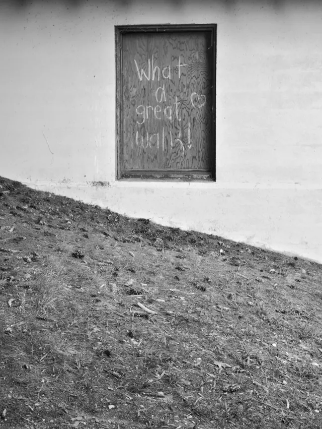
Acorn Smash™: Smash an acorn with your walking stick, in stride. Improves hand-eye coordination.
Acorn Baseball™: Stuff a bunch of acorns in your pockets and bat at them with your walking stick.
Acorn Dodgeball™: Avoid the falling acorns being tossed at you by squirrels in trees.
I felt much safer than I anticipated on the roads. On quiet backroads it was easy enough to listen for cars and cross to the other side to avoid a close call. The busier roads usually had wide shoulders or a yard to provide a buffer. For an unavoidable tight squeeze, I’d make myself as seen as possible (by walking into the road when the car is still at a distance) before hugging the edge of the road and whispering the magic spell “please don’t hit me.”
I saw a sign for honey pointing in my direction, which got me excited.
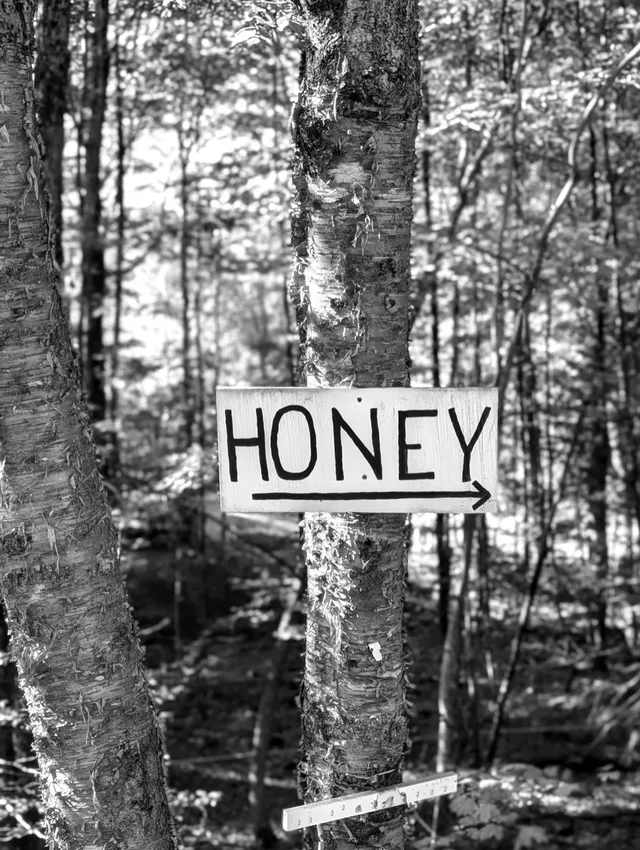
A few miles later and no honey to be found. I felt misled.
A second honey sign appeared. I forgot that their intended audience was cars, not pedestrians.
I reached the honey. The jar was much too big for my needs. I hoped I wouldn’t regret passing on it, like I did with the donuts…
I sat in front of a post office for a break. Not a single wave or smile was given or returned. Just blank stares. This seemed to be the norm for encountering a pedestrian in an unexpected place in the land of cars.
I found a stick: light but strong, shoulder high, smooth, with a thickness that fit my grip like a glove. Some refinements with my knife (I no longer regretted bringing) and it would be a keeper.
I saw someone approaching 1,000 feet ahead. For a brief moment I was convinced it was a parallel universe version of myself (they had a matching fluorescent yellow hoodie, and I hadn’t had a Snickers in a while). I thought about what I’d say as they approached, and decided to ask how their blister was doing.
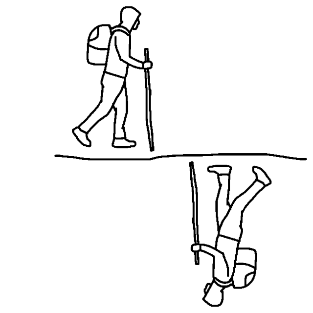
We passed each other, but it wasn’t me. We did the barely noticable head-nod hello, and I carried on, in my own universe.
Beer Can Bingo™: See if you can find every popular domestic beer on a single street.
In New Braintree, I stopped at what I hoped was a farm stand with some food, but struck out. That was my plan for lunch. Twenty minutes later, another farm stand, but this one chock full of things to eat. I met a farmer named Herb (perfect farmer name). He told me his family tree connected him to everyone from an old King of England to the first person who died in the Revolutionary War.
Although it was quite hot, the post-break walk felt almost meditative. My mind wandered over typical useless worries and future plans, then with nothing left to over-think, I passed the remaining miles somewhere between thoughtlessness and environmental awareness.
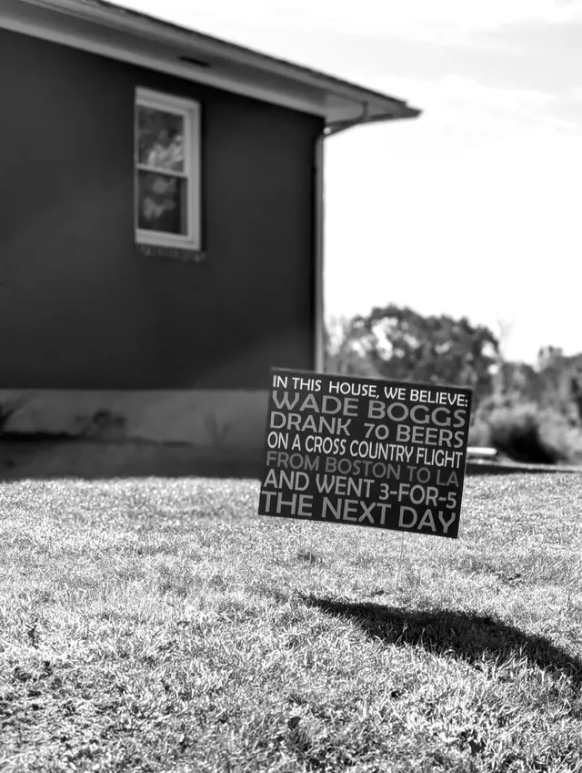
35420 steps.
208,840 left.
Day Five
In which I passed through the towns of Hardwick, Ware, and Belchertown.
Day Five My first 20-mile day started with heavy fog. I perfected an Abbott and Costello Ware routine, tried my hand at trespassing, and ended the day eating wings with another Russell. read more
The blister hadn’t subsided, in case you were wondering. I just learned to live with it, hoping it didn’t get infected, ending my walk early.
A heavy fog blanketed the roads and fields upon waking. This would be my first 20-mile day, to see if my body would be up to the task.
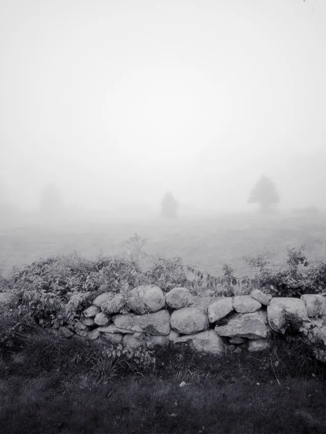
It was a day of nearly all roads. With the poor visibility, I clipped bike lights to my straps to give the cars an extra heads-up that I existed.
Someone left a furlong of burnt rubber on the unblemished asphalt. I wondered if every time they return to this spot they say, Oh yeah that was all me.
The fog lifted after a couple hours and I settled into the groove of the long and winding back roads. They were a familiar and tranquil routine at that point. The only vehicle I saw for a few miles was a mail truck that passed me in both directions.
I approached the town of Ware.
Costello: You’re walking to where?
Abbott: Ware.
Costello: That’s what I want to know. Where?
Abbott: That’s right.
Costello: What town are you going to?
Abbott: Ware.
Costello: In Massachusetts.
Abbott: Yes.
Costello: Here is a map. Show me where.
Abbott: It’s right there.
Costello: Where is right there?
Abbott: Yes.
Costello: Where?
Abbott: That’s right.
Costello: Let’s try this again. Where is your first stop?
Abbott: Oh, absolutely.
Costello: Absolutely where?
Abbott: You got it.
Costello: *Flips table*.
I began to fixate on the word “traipse,” and how it relates to trespass. I wanted to investigate the etymological interplay when I finished. I wasn’t even sure of the definition, but I decided I must have been traipsing, it just felt fitting.
More miles-long stretches of backroads with no car or person in sight, though plenty of houses. I saw a lady on a porch and got excited about the imminent interaction.
I passed by unnoticed. It took a full minute to walk by, yet she was looking down at her phone the whole time.
I found I was taking fewer photos, especially in the second half of the day. The number of photos was inversely proportional to the discomfort of my blister and the weariness of my feet and legs.
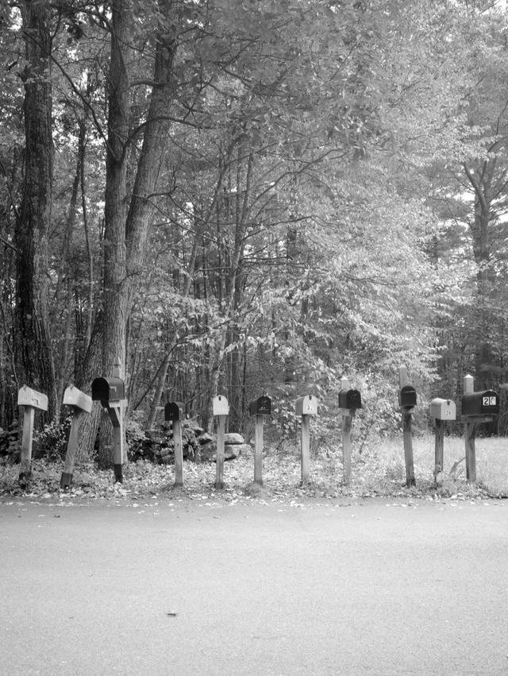
I appeared to be at an impasse for the second time on the walk. The path on my navigation was clearly not a path in the real world. The trespassing signs assured me it belonged to someone else, not traipsers.
I could either double back adding a couple extra miles, or *gulp*, trespass and hope for the best (i.e., to not get shot). I chose the latter, and took a direct line through the woods, staying as far from the houses as possible, until I hit the road again.
I made it through with just a couple scratches and returned to the road and a sigh of relief. Given the number of signs I saw, you would think trespassing is the most violated law in Massachusetts.
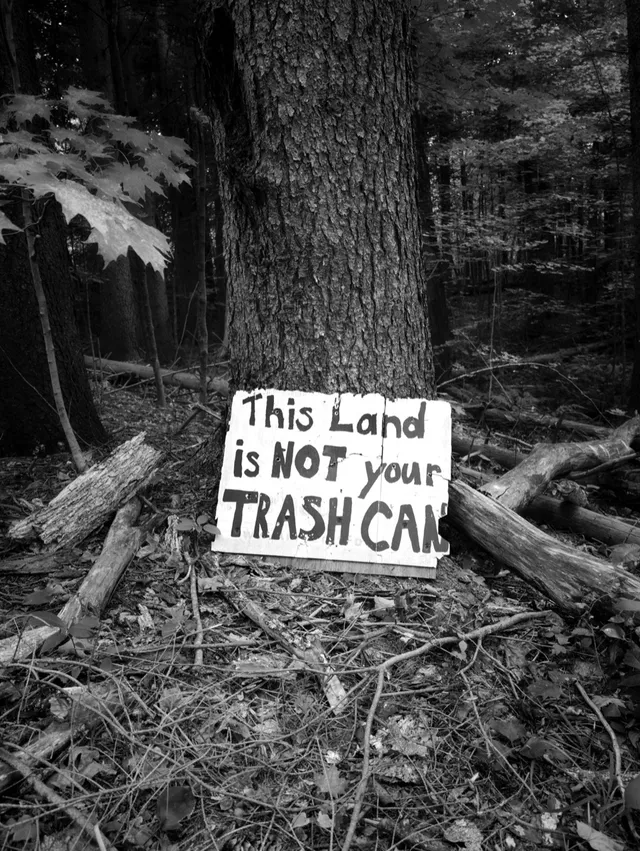
I might have seen more private property signs than squirrels, which was hard to believe. If I were tallying things, there would be a tight race between squirrels, trespassing signs, and beer cans.
The clouds dispersed, the light fell gently through the trees, and I decided it was a sign that having the rest of the day would be smooth sailing.
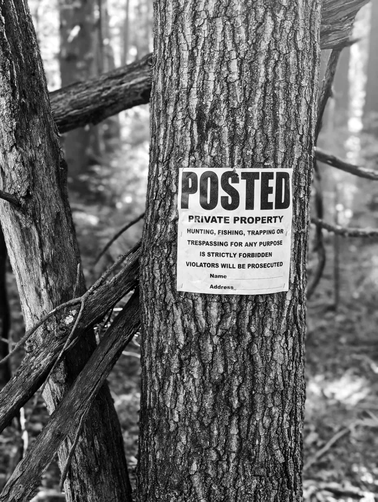
That is, until the GPS navigation voice penetrated my mental silence to remind me that I still had to follow the road for 1.8 miles until my next turn. I felt like I had been on the road for ages, and the unemotional delivery could be soul-crushing. But I stayed positive because I deployed the carrot-and-stick motivating tactic in the form of my last snack—a bag of Cheez-its (and a Snickers bar)—that I devoured promptly when I hit the three-miles-left milestone.
I arrived in Belchertown, tended to my blister, and headed over to the local pub for half-off wings night. I sat next to an old fellow and he was the most excited person about my walk that I met. He couldn’t believe it. He regularly drives up from Springfield for the wings, and a bit of Keno.
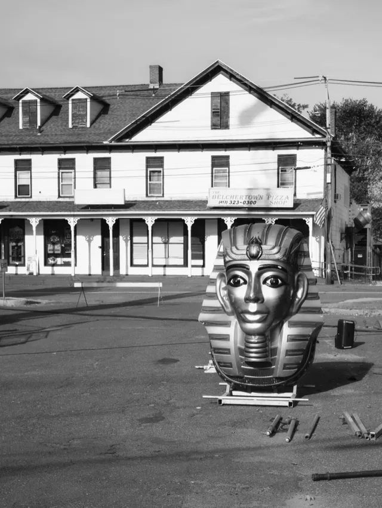
I downed a Guiness, a dozen wings, and a personal pizza. The old fellow tried to get the bartenders to share his enthusiasm about my walk, but they didn’t seem to find it remarkable.
I finally introduced myself, I’m Russell.
Me too! He said.
I knew there was something good about him. He is only the third Russell I’ve met in my life. We parted ways and I went to bed, stuffed but encouraged, having crossed the halfway point.
47,150 steps.
161,690 left.
Day Six
In which I passed through the towns of Amherst, Hadley, and Northampton.
Day Six Back on the rail trails I counted my steps. My internal jukebox was in a sad-90s boy phase. My achilles was starting to complain, but I got a morale boost from seeing my family. read more
Back on a rail trail, I remembered how nice it was to shut off the traffic-watching part of my brain. No more worrying, just walking.
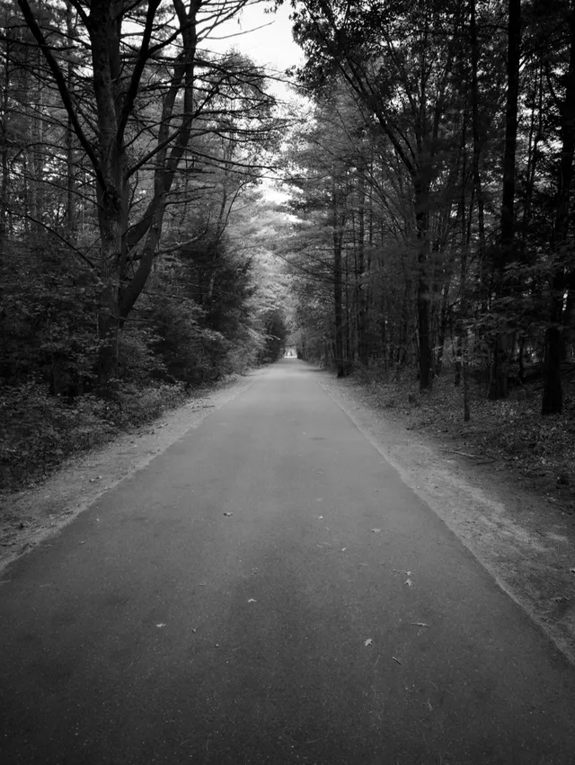
I filled the stretches of marked quarter-miles by counting my steps at different paces. They fell between 550 and 600, or about 2,300 steps per mile.
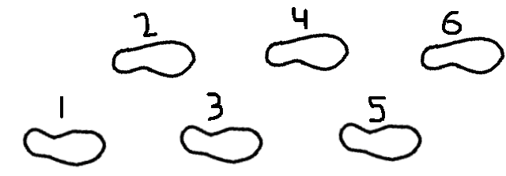
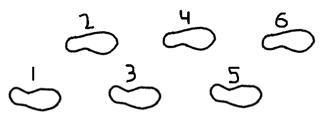
I practiced walking with my eyes closed on the straightaways. This was harder than I anticipated. I veered off the path within 20 steps nearly every time.
Walking by idyllic farms reminded me of the sheer luxury of the walk, and how lucky I felt to be able to do this, for work no less.
Unfortunately that didn’t diminish the regular physical reminders that it wasn’t luxurious for my body. 19 miles in and I started feeling a pull on my achilles for the first time (don’t tell my PT). Nothing serious, but it had been mostly out of mind for the whole walk, overshadowed by the feet.
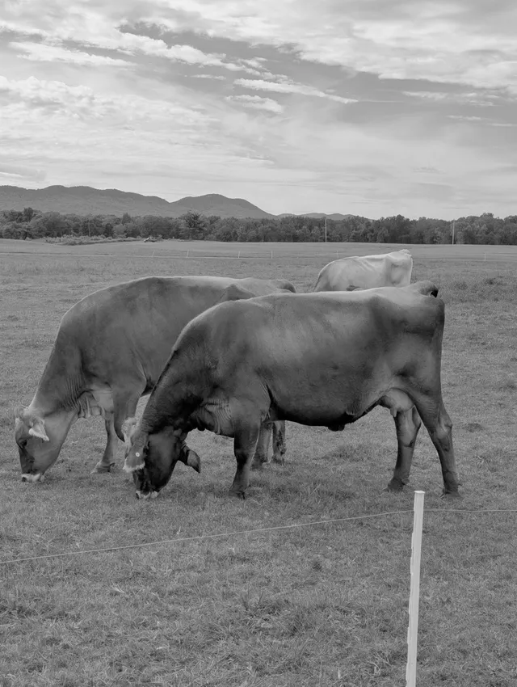
My friend—safe to call a musicophile—gave me a call and his first question was, What are you listening to?
I told him nothing, but that I was often my own jukebox. I was in my sad-boy-90s phase of the walk, so I said I was just whistling Between the Bars by Elliot Smith. I wish I had recorded everything I sang, it could’ve made for an exceptionally niche playlist.
A small sample of hits from the road, influenced by both internal and external sources:
- Elliot Smith
- Hole
- The Omaha Folk
- Matthew Wilder
- Winnie the Pooh
- Ace of Base
- The Presidents of the United States of America
- The Talking Heads
- Green Day
- Johnny Cash and June Carter Cash
- Sophie B. Hawkins (I saw a beaver dam and lodge)
I spent the night with my family in Northampton. They came to give me a little morale boost before my final days. I was most excited that my daughter enjoyed some sweet potato fries at the restaurant. A big win to get another vegetable in the rotation.
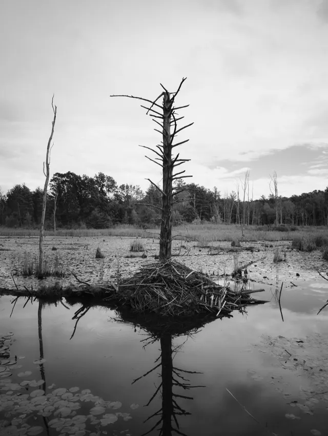
43,700 steps.
117,990 left.
Day Seven
In which I passed through the towns of Easthampton, Southampton, and Montgomery.
Day Seven Hips and feet were tender. Self-doubt was creeping in before my first big incline. I slept in a shed on a farm. read more
The hips and feet were tender in the morning, but I felt good with a shorter day ahead of me. I had some extra pack weight—a nice assortment of bars from the grocery store—since I’d be staying on a farm a couple miles from town.
I observed something I called a distance warping effect. Over 75% of the way through the walk, and it didn’t feel like I’d gone very far. My mind only held context for a day’s worth of walking, so despite having gone 100 miles, I didn’t internalize that accomplishment.
I came to accept that there weren’t any grand epiphanies on the horizon. Not that I expected them, but I figured the scope of the unordinary experience might have elicited one or two. Instead, it was just a lot of walking. Sometimes pleasant, sometimes not.
Self-doubt entered the chat. Perhaps the book I read the night before planted the seed, and an unusually acute awareness of the discomfort in my right foot. And I had yet to cross the 10-mile threshold, with my first big incline looming ahead of me.
I was truly traipsing that afternoon. I didn’t know if I had it in me to do the hill. It occurred to me I could get a ride and be home in under an hour.
Halfway up the long incline I stopped to go to the bathroom and refilled my water in a small, vacant multi-shop building in Montgomery. As I exited the bathroom, I startled a man that appeared out of nowhere.
I was about to lock this place up. Good thing I ran into you, he said.
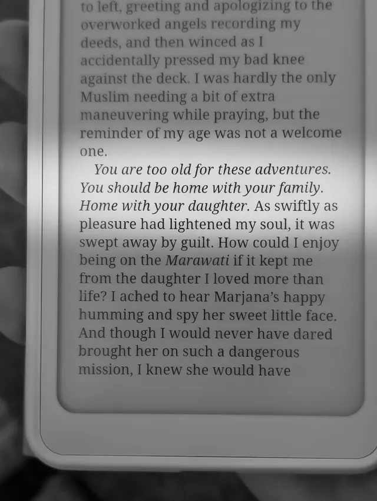
He offered to refill my water bottle and we chatted a bit about the walk, and how he had done the 100-mile wilderness section of the AT.
I headed back out and I made it over the mini-mountain. I nearly jogged down the equally long descent into the valley where I reached the farm. I ran into a guy.
Is this your farm? I asked.
Nah I’m just living here he said.
He showed me the outhouse and I made my way to my cabin (or shed with a bed) that I didn’t leave the rest of the afternoon. I stayed the night amongst sheep and cows. I ate two bars and a muffin, and went to sleep shortly after the sun set.
40,250 steps.
77,740 left.
Day Eight
In which I passed through the towns of Russell, Blandford, Otis, Monterey, and Great Barrington.
Day Eight I woke up early, and fueled by accidental caffeine, crushed 33 miles to make it home a day early. Arrived in the dark, exhausted and proud. read more
I woke up before 6am, ate my last energy bar, and hit the road an hour earlier than usual. Carpe diem baby.
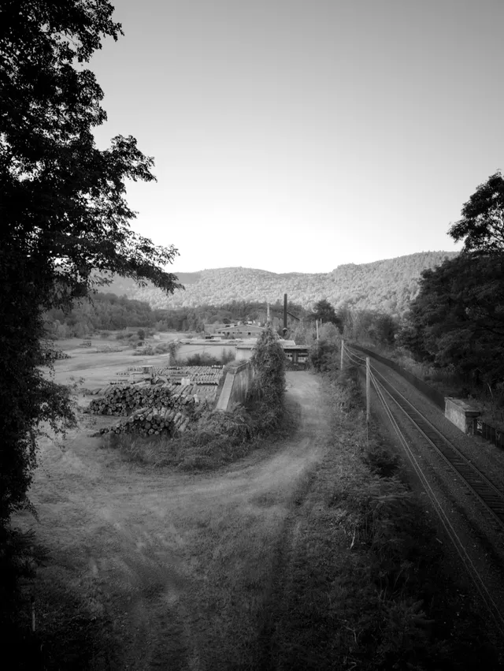
I crossed into the town of Russell, and for the first time I felt that I might actually do it.
The day began with a steady ascent for the first six miles. With some narrow shoulders and switchbacks, I was constantly listening for the car or truck that came every few minutes so I could get on the opposite side of the road.
I heard the hum of the Mass Pike ahead which gave me an energy boost. In my mind, it was the last big milestone.
A mile later, I still hadn’t reached the highway. It turned out to be a very distant hum, though I was impressed by how far the noise could carry down the mountain.
I stopped for second breakfast at the country store in Blandford. I hate to admit it, but a small, hokey plaque deeply resonated with me: Live Simply, Expect Little, Give Much (Norman Vincent Peale, I later found out). I considered this phrase for a good chunk of the day’s walk.
The waitress put a coffee in front of me before taking my order, and I didn’t want to be wasteful or rude, so I drank it. I only drink decaf.
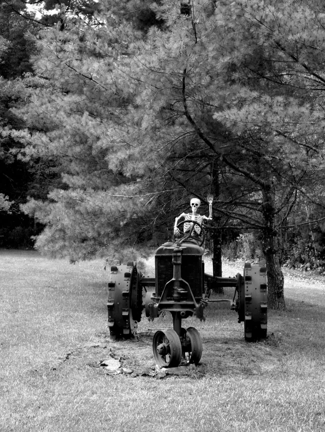
My first roadside interaction—eight days into the walk—came in Otis.
Hey man, you need a cold water?
I was so surprised by the gesture that I instantly declined.
No thanks but I appreciate it!
He pulled away and I don’t know why I turned it down.
I quickly approached my end goal for the day, but nearing my home turf, adrenaline kicked. Or it might’ve been the coffee.
It was only 2pm, and regardless of what was fueling me, I thought I could make it home. I chewed on this idea for a while then resolved to make it come true. The allure of sleeping in my own bed sealed the deal. I checked my maps to see if it was feasible before sunset. With a couple of small breaks and undeterred focus, I could make it. I set aside the fact that it was another 14 miles, which would put me over 33 miles for the day. I ate my (hopefully last) Snickers and got after it.
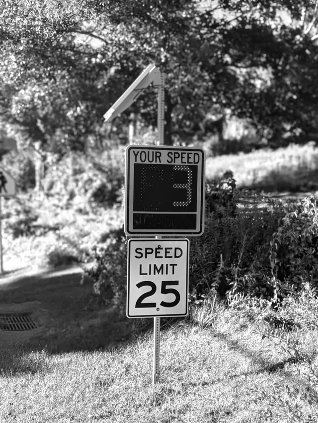
I don’t have much to recall from that stretch. I went into a sort of trance. I walked, and walked, and walked. I took a single five-minute break to refill my water and stretch at a library in Monterey, then kept on walking. I felt detached from my body, I was just a robot, going through the motions. I’m sure my feet hurt, but I could deal with that the next day.
My wife reminded me not to overdo it. I told her I was listening to my body, though in reality I was just ignoring it.
The distance warp effect returned when I crossed into Great Barrington. My judgment of time and distance was so dialed into my car trips along this route that it just felt all wrong on foot. The two-minute drive between the ski slope and the Chinese restaurants took me an hour and messed with my head a little.
I reached the outskirts of downtown where the sidewalk begins, just as the sun set. I walked directly to the restaurant where my wife was working to surprise her (and eat all the food).
I saw some folks I know and I joined them. They lovingly interrogated me about my walk as I inhaled what was put in front of me. I didn’t stay too long since I still had about two miles before home.
It was my first night walk, and it was perfect. I strolled through town, appreciating all that was familiar, up the hill to my home, opened the door, and just sat on my steps, not quite sure what to do with myself for a while. I was exhausted, but proud. More so for the fact that I did 33.5 miles in one day than anything else.
I eventually mustered up some energy to take off my shoes. It wasn’t pretty under there, but I didn’t plan on using my feet for a few days.
77,740 steps.
0 left.
One week post-walk
In which I remain sedentary.
One week post-walk I barely move. It feels delightful to be out again without a destination when I am forced to walk while dog-sitting. I struggle to find the words to explain the walk. It was mostly good. read more
The farthest I’ve walked is from the car to the grocery. Dog-sitting for a friend forces me back to the road, by foot. I put on shoes (for the first time) and head outside. My body has mostly recovered, and a short, leisurely, destination-free walk is delightful.
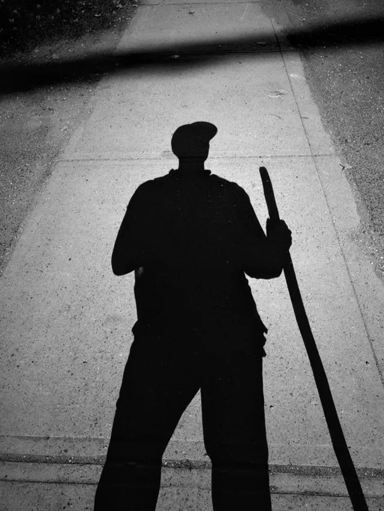
I visit my daughter’s class, a small group of four- and five-year-olds. They were tracking my progress on a giant map every day. They pepper me with questions like, What did you eat? What animals did you see? Can I hold your walking stick?
I nail the interview. It’s awesome to see how curious they are about my walk.
Many adults are equally curious, but they simply ask, How was your walk?
I struggle to find the words that reduce 368,000 steps into small talk.
Mostly good, I say, hoping they ask some other probing questions so I don’t have to ramble.
I sense that they want to hear something more profound than I have to offer. My pre-walk self wanted that, too.
But sitting down and writing out my reflections allows me to appreciate the walk, even in the absence of transcendence or transformation.
In hindsight, I experienced the walk as a long series of short walks, delineated by the next turn, milestone, or change in terrain. Some of these walks yielded new sights, sounds, or physical challenges to overcome. But they were often both environmentally and physically repetitive, allowing my mind the opportunity to wander, or do nothing at all.
All in all, it was a good walk.